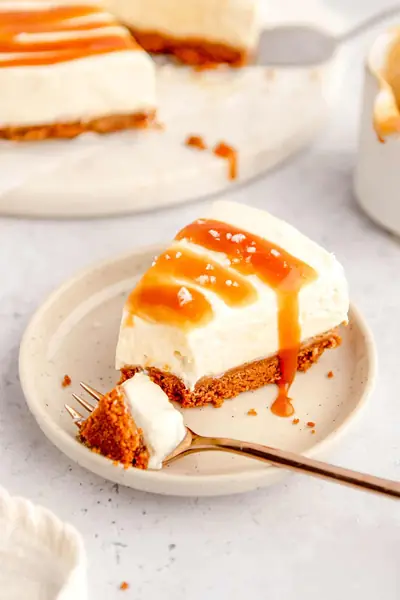

No Bake Salted Caramel Cheesecake

Ingredients
- 1 cup granulated sugar
- ½ cup water
- ⅓ cup butter (room temperature)
- ½ cup heavy cream
- 1 tsp sea salt
- 3 cups caramel biscuits (use gluten free if needed) (10 ounces / 300 grams)
- ½ cup melted butter (7 tablespoons / 100 ml )
- 3 cups full fat cream cheese (optionally use low fat or fat free for a lower calorie version) (675 grams)
- 1½ cup whipping cream (350 ml)
- ¼ cup sour cream (60 grams)
- ½ cup powdered sugar (100 grams)
- 1-2 tbsp prepared salted caramel (30 grams)
- 1 tsp vanilla extract
- 1 tsp salt (optional)
Steps
- Start by preparing the salted caramel. In a non-stick saucepan heat the sugar and water over medium heat. Stir until combined.
- Let the sugar dissolve and start to bubble. There is no need to stir the sugar anymore as the sugar can start crystallizing.
- Let the sugar change color to amber.
- Once the sugar reaches the amber colour takes off the heat and immediately pour in the heavy cream and stir until combined. Be careful the mixture will start to bubble a lot.
- Carefully add in the butter and stir until combined.
- Stir in the sea salt and mix thoroughly to combine.
- Pour into a jar or bowl and let it cool down completely. You will need about 2 tablespoons of this sauce for the cheesecake topping, store the rest in an airtight container in the fridge for use in other recipes!
- Add the caramel biscuits into food processor and pulse until their reach fine crumb.
- Transfer the crust into a 9 inch / 23 cm springform cake pan. Press into the bottom of the pan and let it set in the fridge while you are making the filling.
- In a large mixing bowl whisk the whipping cream until thick and creamy. Set aside.
- In a separate bowl mix the cream cheese, sour cream, powder sugar, salted caramel and vanilla extract and mix until combined.
- Fold in the whipped cream and mix until just combined.
- Pour prepared filling into a springform cake pan and spread evenly across the crust.
- Place in the refrigerator overnight or at least 8 hours.
- Before serving top the chilled cheesecake with swirls of salted caramel and sprinkle with sea salt flakes.
Recipe by Anjali Shah · The Picky Eater, from The Picky Eater. Saved here for personal use; the original has the full notes, tips and photos. Open original